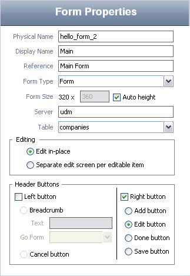

Dr. Dobb's Journal January 2009
Bob is a part-time geek and full-time president of Servoy USA. He can be contacted at bcusick@servoy.com.
Why bother writing apps for Apple's iPhone when you can write an app to write the apps.
Along with about 13 million of my closest friends, I recently bought an iPhone. Whether you love or hate the iPhone doesn't really matter. What matters is Apple (and now Google) have created mobile devices that are actually compelling. They're more than just phones—they're mini-computers in your pocket.
Because people are seeing them more as mobile communication devices rather than just phones, it also raises expectations as to how you interact with data—especially the data you also interact with on nonmobile devices.
The bottom line is that more and more users will ask for access to their data applications (or at least subsets of them) while they're on-the-go. And that, fellow developers, means you will be asked to create mobile applications like these sooner rather than later.
For this project, I focused on the iPhone for several reasons:
Moreover, I wanted to create an application that would, itself, build iPhone applications. Basically, a metadata repository that either IT folks or even (gasp!) end users could use to build specialty iPhone apps without having to wait for "coders" (who are always knee-deep in "urgent" projects) to get around to building it.
The application had to be fast, flexible, and somewhat sexy. And once deployed, it had to run anywhere on anything, OS- and database-wise. The last thing I wanted is to create this framework and have it limited to only a certain subset of users on a certain subset of hardware that was capable of running on only a subset of database engines.
While everyone has their favorite tool for creating applications, for this project I was open to anything and everything.
For instance, in describing how he took some example HTML code and modified it for the prototype app he was writing, Tom Thompson presented one approach in "Porting JavaScript Applications to the iPhone" (DDJ, November 2008; www.ddj.com/mobile/211200910).
While that's a great approach if you only need a few applications or some really custom stuff, I was hoping for something where I could easily create lots of different iPhone applications from different database servers running on different databases and platforms. And, more importantly, I didn't want to have to handcode all the inevitable change and enhancement requests down the line.
The other thing that I wanted (if possible) was to create something that would already support AJAX with little or no code, but that also had a small client-side JavaScript library due to the iPhone's limited capabilities. Because of the iPhone's limited screen real estate, I wasn't going to spend time trying to build something that had a multiple document interface.
After talking with other developers and having a thorough Google session, I defaulted to my personal development tool of choice—Servoy (www.servoy.com). In some ways, this choice is understandable because Servoy is the company I work for.
Nonetheless, Servoy meets all of the project requirements. Moreover, because I can script it in JavaScript or straight Java (or both), I wouldn't have to do the down-and-dirty coding of database connections, data binding, connection pooling, or any of the other stuff I would have to in other environments. Additionally, Servoy automatically translates all the forms into HTML with AJAX built-in without any code. Consequently, I could develop a native client "builder" application and the actual iPhone deployment application from a single code base, in a single IDE (Eclipse).
Figure 1: The main "builder" application is a mini-IDE. No programming is required to create the iPhone application.

Figure 2: By specifying the metadata about your database and table, the iPhone Application Builder program will automatically create all the necessary forms and objects for you.
Once I decided on the "what" of the application, it was time for the "how." I fired up the Servoy Developer and created a basic schema, then sat down to decide on what I wanted the final output to be.
After looking at a few different iPhone applications, I decided that the default Contacts application would be the inspiration for the generated iPhone applications. I took some screen captures on the iPhone, e-mailed them to myself, and used Photoshop to snag some graphic elements.
Because Servoy ships with Sybase's iAnywhere database and has sample tables, I created a form based on the companies table. I then worked out what font/styles to use for the various elements. The official Apple Human Interface Guidelines for iPhone are only available to registered iPhone developers (which I'm not), so I did the next best thing—I searched the Web and looked at other iPhone web frameworks' CSS.
Figure 3: The builder application even includes a native client "preview" that approximates how your finished application will look, so you can create and test applications without having an iPhone.
Because Servoy's style sheets are also based on CSS, I had the basic look-and-feel up and running in no time. I created a simple list view of all the company names, and a simple company detail form. Because you only have to specify a single line of code to jump to another form, it was easy to make the click on the list show the related detail and vice versa. I didn't have to worry about the database connection or data binding—everything I built and previewed in the Servoy Developer automatically gets rendered in plain HTML/CSS.
All that was left was to view the progress, so I started up Mobile Safari to have a look. Servoy Developer has a built-in application server so it took less than five seconds to view the application "live" on the iPhone. Everything worked exactly the same as it did in the native client, and once I made some slight adjustments to the style sheet, I had a working prototype!
Once I had a viable end product design, I turned my attention to the configuration application or "builder" app. I knew that the schema for this part would be pretty straightforward. There were going to be iPhone solutions that contained forms, and those forms would contain objects.
I decided early on that I wanted to add a layer of automation that would create all the required forms for a particular solution on-the-fly so they could be easily changed. That meant I needed to create a flexible data repository to make all the form objects nearly as configurable as they are in the "regular" Servoy Developer.
Luckily, Servoy makes this easy by giving you the ability to create forms and objects programmatically—with all the same properties and functions they have when you use the Servoy IDE.
I don't know about you, but when I'm working on a blue sky personal project like this, I want to create something that I would use. And because I had the luxury of not having a deadline, a set of hard requirements, or stakeholders and end users to please, I had a lot of flexibility.
Figure 4: The application on the iPhone looks the same as it does in the builder's "preview" window.
I started with the basics. Create a solution. Create a form. Put form objects on the form. Generate the Servoy forms programmatically, check on iPhone.
I was really amazed at how quickly it all came together. I spent maybe 20 hours and about 800 lines of code getting the basics of both the builder application and the deployed iPhone application to work.
Alas, I then made the "mistake" of showing it to some colleagues and told them how easy it was to create some basic applications. They immediately fell in love with it—and then the change and enhancement requests came flooding in.
Figure 5:Your iPhone application can have edit fields—and will even automatically support separate edit fields with the ">" at the end of each line—like the built-in "Contacts" application.
At that point, I decided that because the basic concept was sound and the application was basically functioning, it was worth the time and effort to turn it into a full-blown, detailed application.
I added features such as reordering the forms and objects, added support for most of the object types that Servoy supports (text fields, text area, HTML areas, labels, buttons, and so on) and even added two custom objects—a Navigation Item and Spacer that were a result of not wanting to create a bunch of separate labels and graphics every time I wanted a navigation item.
As I continued to build iPhone applications for myself, I found I needed to show related data, filtered data, related value lists, and the like. So most of the time that has gone into the application has been spent in sandboxing all the GUI elements to make sure that users don't accidentally go astray. I wanted to make it as "user-proof" as possible.
As you've likely experienced, it takes more coding to make an application easy and smart than it does to rely on users entering the right thing in the right spot. The good news is that I don't have to write all the guts of the code as well, only the application logic and error checking. All the heavy lifting of database connections, data broadcasting, client state, HTML generation, AJAX calls, and the like is handled by Servoy.
As of this writing, the application is still technically in late alpha, but if you would like to check it out, you can download the free Community Edition of Servoy (www.servoy.com) and my iPhone Application Builder from Dr. Dobb's (see www.ddj.com/code/).